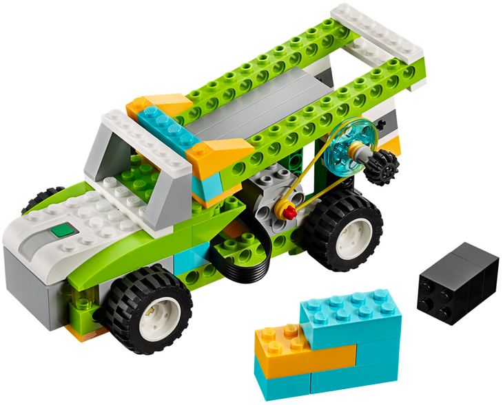
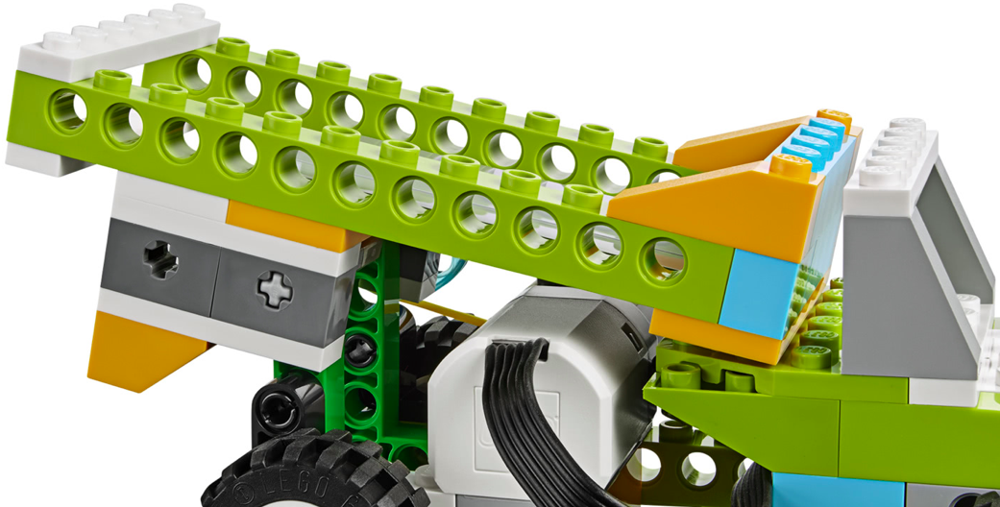
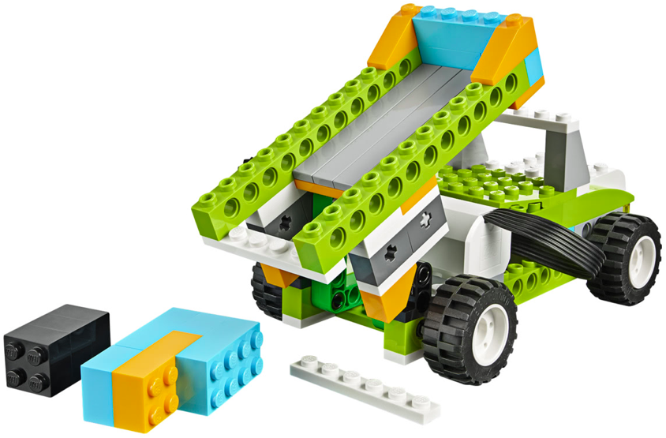
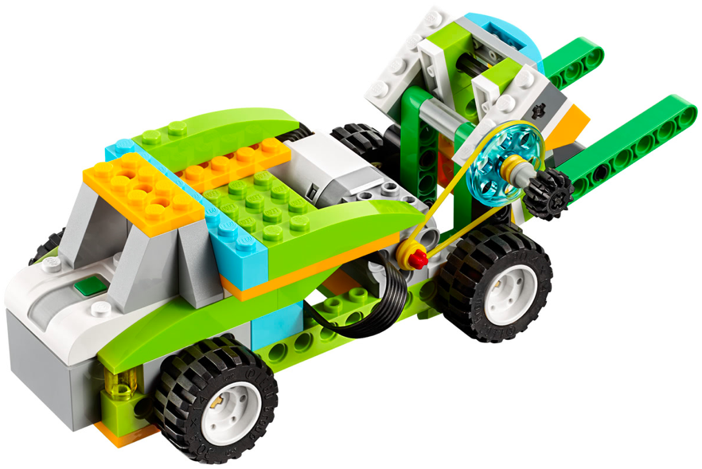
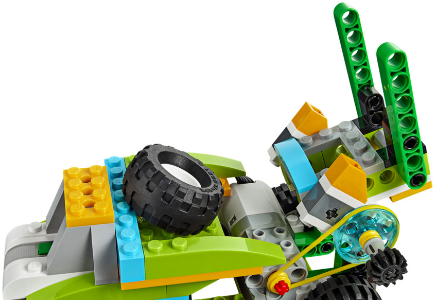
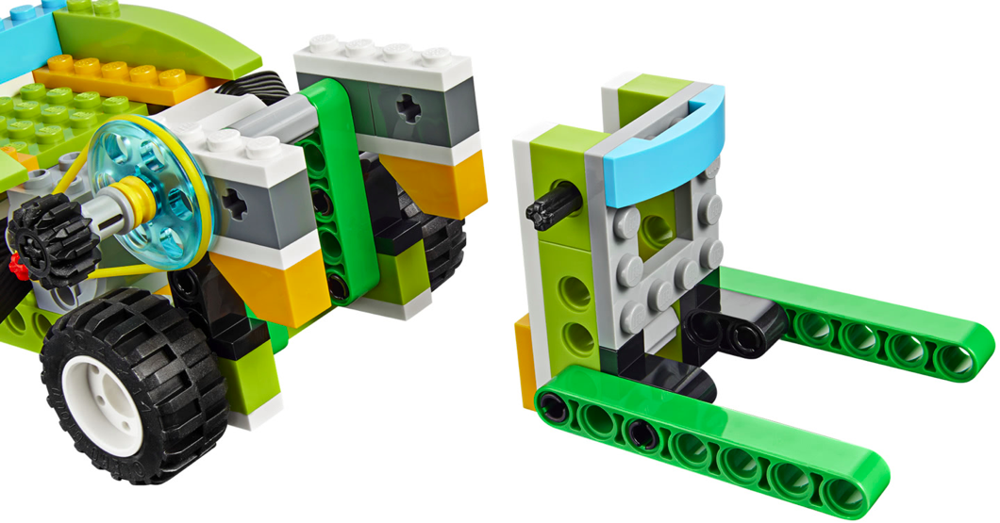

En este proyecto el alumno debe construir la base del los dos siguientes montajes. Debe hacer una serie
de retos iniciales para ver como se realiza el movimiento y como se traslada de un sitio a otro.
El primer montaje tiene las instrucciones para construir la parte de los engranajes. Este robot será la base
para los dos siguientes robots.
Los dos robots siguientes no tienen instrucciones y solo disponen de 3 fotos. Se construyen sobre la
base del montaje anterior.
El alumno debe entender como funciona el mecanismo de los volquetes de los vehículos y de como la gravedad hace el resto del trabajo.
• Hacer que el robot mueva el mecanismo todo el tiempo.
• Hacer que el robot haga un sonido cada vez que toca un extremo al moverse.
• Esperar al sonido de una palmada para iniciar el movimiento.



• El camión debe subir y bajar el volquete.
• El camión debe dejar caer la basura completamente.
• Repetir pero hacer un sonido mientras esté descargando la basura.



• El camión debe ser capaz de elevar la basura y depositarla en el remolque.
• Repetir pero esperar a un sonido para efectuar el movimiento.
• Encender la luz mientras efectúa el movimiento.
{kind=link}
{kind=link}